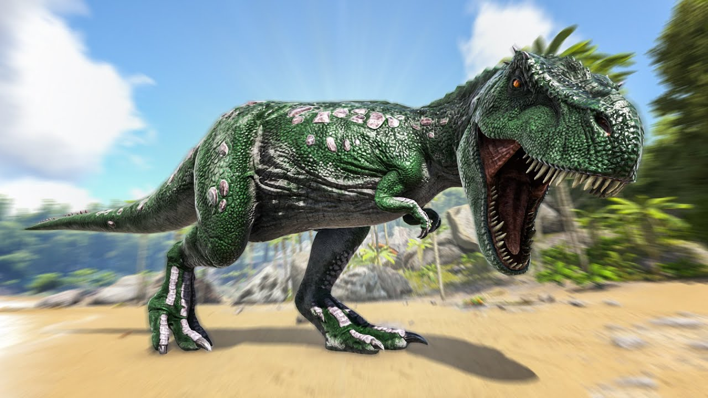

- Species
Tyrannosaurus dominum
- Time
Late Cretaceous
- Diet
Carnivore
- Temperament
Aggressive
Rex
Table of Contents
Overview
This section is intended to be an exact copy of what the survivor Helena Walker, the author of the dossiers, has written. There may be some discrepancies between this text and the in-game creature.

Wild
Arguably the deadliest creature on the Island, Tyrannosaurus dominum is a killing machine. Active mostly when hunting for food or defending its nest, a good plan is to avoid every Tyrannosaurus. It is pure power from its stomp to its tail. It is not able to intimidate every foe with its roar, but upon hearing it, it might scare the poop out of you quite literally. Despite being a different sub-species of Tyrannosaurus, everyone I've met still refers to them as a "Rex" or a "T-Rex". I've long since stopped trying to convince anyone, especially the few who I've encountered wearing Tyrannosaurus teeth as necklaces.
Domesticated
Taming a Tyrannosaurus is without a doubt the goal for any warlord or warring tribe. Tyrannosaurus is a fierce battle companion. There is a reason Tyrannosaurus is considered the king of dinosaurs (or in this genus, the "lord"). Any tribe that manages to tame one has almost nothing to fear.
Behavior
Highly aggressive, Tyrannosaurus will attack most living creatures in sight aside from other apex predators. They're extremely bulky, having nearly double the Health of Spino of the same level. They also possess surprisingly good Stamina for their size, of which is also greater than that of any same-leveled Spino. What Tyrannosauruses lack in attacking speed (when compared to a Spinosaurus) they make up for in sheer Health. Tyrannosaurus generally ignore mounted tamed animals and choose to attack wild animals instead, but will attack tamed mounted animals if they get too close. However if they see a helpless tame or dismounted Human in the open, they will begin to attack.
Taming
Taming a Rex requires careful preparation. Survivors should bring plenty of tranquilizing tools, such as Tranq Arrows or Darts, and a significant amount of food, preferably Prime Meat or Kibble. Building a trap is highly recommended to ensure a safer taming process.
Uses
The Rex is one of the best combat mounts in the game. Its high health, massive damage output, and ability to roar and intimidate smaller creatures make it invaluable for boss fights and PvP encounters. Additionally, its roar can cause certain creatures to flee, providing a strategic advantage.